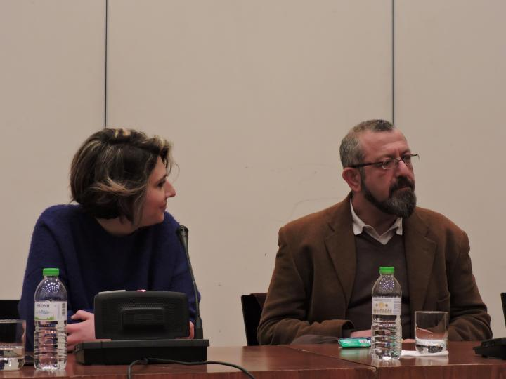

της Βαγγελιώς Χρηστίδου
Η νέα μεγάλη έκθεση «Συμφωνία σε 20 μέρη. Σύγχρονα έργα από τις συλλογές του Κρατικού Μουσείου Σύγχρονης Τέχνης και του Μακεδονικού Μουσείου Σύγχρονης Τέχνης, συνδιοργάνωση των δύο φορέων, εγκαινιάστηκε την Παρασκευή 16 Φεβρουαρίου 2018, στους χώρους του ΜΜΣΤ. Θα διαρκέσει έως και τις 20 Μαϊου και παρουσιάζει, για πρώτη φορά, ένα διευρυμένο σύνολο έργων Ελλήνων και ξένων καλλιτεχνών που προέρχεται από τις συλλογές των δύο μουσείων. Το γεγονός παρουσιάστηκε σε συνέντευξη τύπου μία ημέρα πριν, μαζί με αναφορά στις βασικότερες εκθέσεις που κάθε φορέας - μαζί και το Μουσείο Φωτογραφίας και το Κέντρο Σύγχρονης Τέχνης Θεσσαλονίκης - έχει προγραμματίσει για το 2018. Ενόψει της συνένωσης των λειτουργιών τους (μέσω νέου φορέα, του MOMus), τα Μουσεία μας επιφυλλάσσουν ένα πλούσιο πρόγραμμα για τους επόμενους μήνες. Ξεκινώντας μια συνεργασία με το ΜΜΣΤ, το «Pressenger» ήταν εκεί και σας ενημερώνει σχετικά.
Στη συνέντευξη τύπου για την έκθεση «Συμφωνία σε 20 μέρη. Σύγχρονα έργα από τις συλλογές του Κρατικού Μουσείου Σύγχρονης Τέχνης και του Μακεδονικού Μουσείου Σύγχρονης Τέχνης», που έδωσαν εκπρόσωποι των φορέων στο ΜΜΣΤ, το κλίμα ήταν «συνεργατικό». Η νέα έκθεση είναι, εξάλλου, σύνθετη - έγινε επιλογή μεταξύ 3.500 έργων των δύο φορέων - και συμβολική.
Είναι η δεύτερη έκθεση που γίνεται με σύμπραξη των δύο φορέων και αποτελεί, όπως χαρακτηριστικά ανέφερε ο πρόεδρος του ΔΣ του ΚΜΣΤ, Ανδρέας Τάκης «το εναρκτήριο λάκτισμα της πραγματικής διαδικασίας συνένωσης» των Μουσείων. Στόχος, όπως ανέφερε χαρακτηριστικά η Πρόεδρος του ΔΣ του ΜΜΣΤ, Ξανθίππη Σκαρπιά – Χόιπελ, είναι «να γίνονται ουρές έξω από τα κτίρια, να τονωθεί η Σύχρονη Τέχνη».
Την ελπίδα για «συνεργασίες στο μέλλον με γόνιμο διάλογο των τεχνών», εξέφρασε από πλευράς του ο Διευθυντής του Μουσείου Φωτογραφίας Θεσσαλονίκης, Ηρακλής Παπαϊωάννου.
Η νέα έκθεση με λίγα λόγια
Η νέα έκθεση που συνδιοργανώνουν το ΜΜΣΤ και το ΚΜΣΤ, περιλαμβάνει σχεδόν 200 καλλιτέχνες. Όπως τονίζεται, «μέσα από 20 ενότητες, εκτίθεται ένα ιστορικό κομμάτι έργων και καλλιτεχνών, το οποίο συμπληρώνεται από νέες διασυνδέσεις και οπτικές γωνίες, που εμπλουτίζουν το τοπίο της σύγχρονης τέχνης και αναδεικνύουν όψεις σημερινών προβληματισμών, καλλιτεχνικών, κοινωνικών, πολιτικών».
«Το ΚΜΣΤ και το ΜΜΣΤ, ευελπιστούν ότι η συνάντηση Ελλήνων και ξένων καλλιτεχνών στο μέλλον θα ξαναβρεί την προοπτική της διάσταση, μέσα από το ρόλο που θα κληθεί να παίξει ο υπό σύσταση ενοποιημένος Μητροπολιτικός Οργανισμός Μουσείων Εικαστικών Τεχνών Θεσσαλονίκης (MOMus) στην ελληνική κοινωνία και στην κοινωνική, πολιτισμική και καλλιτεχνική πραγματικότητα της Θεσσαλονίκης, της Ελλάδας, των ευρωπαϊκών και των βαλκανικών χωρών», αναφέρουν στη σχετική τους ανακοίνωση από κοινού, οι δύο φορείς.
Η έκθεση, θεωρείται πως ανοίγει την προοπτική επόμενων εκθέσεων, ώστε να παρουσιαστεί σταδιακά, το σύνολο των συλλογών και των καλλιτεχνών, που εμπλουτίζουν τις συλλογές.
Να σημειωθεί ότι η Συλλογή του ΜΜΣΤ περιλαμβάνει πάνω από 2.300 έργα (σύγχρονων Ελλήνων και ξένων δημιουργών, που συγκεντρώθηκαν από τον διεθνώς γνωστό γκαλερίστα και συλλέκτη, Αλέξανδρο Ιόλα), ενώ αυτή του ΚΜΣΤ, περιλαμβάνει 200 έργα (ζωγραφικές, γλυπτικές και χαρακτικές συνθέσεις, κυρίως καλλιτεχνών που ζουν στη Θεσσαλονίκη), που δωρήθηκαν στο Μουσείο από τον Οργανισμό «Θεσσαλονίκη – Πολιτιστική Πρωτεύουσα της Ευρώπης 1997».

«Οι συλλογές, το ξέρετε, το φαντάζεστε, είναι ένας ανεξάρτητος πλούτος για τα Μουσεία», ανέφερε εξάλλου, κλείνοντας χτες, η Διευθύντρια του ΜΜΣΤ, Θούλη Μυσιρλόγλου. «Το ΜΜΣΤ προσπαθεί να τις αναδεικνύει μαζί με τα μόνιμα έργα, όσο γίνεται. Η “Συμφωνία σε 20 μέρη, ανακαλεί τη συμφωνία των δύο Μουσείων, να προχωρήσουν σε αυτή τη συνέννωση, αλλά και τη “μουσικότητα” μιας εικαστικής έκθεσης. Είναι ένα ακόμη στοίχημα, μια πρόταση σύγχρονης τέχνης και ελπίζουμε σε συνέχεια...».
Η έκθεση θα έχει κι εκπαιδευτικό χαρακτήρα, μέσω σειράς εκπαιδευτικών προγραμμάτων για παιδιά και οικογένειες, που το ΜΜΣΤ ξεκινά εντός των ημερών.
Οι βασικότερες εκθέσεις του 2018
Κλείνοντας και ενόψει του τελικού σταδίου για την ίδρυση του Μητροπολιτικού Οργανισμού Μουσείων Εικαστικών Τεχνών Θεσσαλονίκης (MOMus), το ΚΜΣΤ και το Κέντρο Σύγχρονης Τέχνης, το ΜΜΣΤ και το Μουσείο Φωτογραφίας Θεσσαλονίκης, παρουσίασαν τον προγραμματισμό του 2018 αναφερόμενοι, αμφότεροι, σε δύο βασικές εκθέσεις - εκδηλώσεις που πρόκειται να διοργανώσει το κάθε Μουσείο μέσα στη χρονιά.
Η σημαντικότερη, ίσως, έκθεση του ΚΜΣΤ, η ήδη τρέχουσα με τίτλο «Η Θέα από το παράθυρό μου... Εκδοχές της “Οικίας” στη ρωσική πρωτοπορία. Έργα από τη συλλογή Κωστάκη» (παρατείνεται μέχρι και τον Απρίλιο 2018), που παρουσιάζεται στη Μονή Λαζαριστών. Αναμένεται επίσης η «Harvard Strike» (Σεπτέμβριος 2018 – Ιανουάριος 2019), στη Μονή Λαζαριστών, ενώ η Συλλογή Κωστάκη πρόκειται να ταξιδέψει στην Κωνσταντινούπολη (Σεπτέμβριος 2018 – Φεβρουάριος 2019). Να σημειωθεί ότι, το ΚΜΣΤ έχει ξεκινήσει συνεργασίες με το «Pompidou» του Παρισιού και άλλους μεγάλους εκθεσιακούς χώρους της Ευρώπης.
Μεγάλο γεγονός του 2018 η Photobiennale, συνεργασία του ΜΜΣΤ και του Μουσείου Φωτογραφίας (Σεπτέμβριος 2017 – Ιανουάριος 2019). Το ίδιο το ΜΜΣΤ επίσης έχει να προτείνει, πέρα από την τωρινή έκθεση, την έκθεση «Σύγχρονη Κινεζική Τέχνη» (Απρίλιος – Μάιος 2018). Τέλος, το ΚΣΤΘ (λειτουργεί ως αυτόνομο τμήμα του MOMus), θα δώσει έμφαση σε τέχνες όπως η performance, ο χορός και το θέατρο, ενώ ετοιμάζει, το καλοκαίρι, μια μεγάλη έκθεση στο Λιμάνι.
* Κρατικό Μουσείο Σύγχρονης Τέχνης, Τμήμα Δημοσίων Σχέσεων & Επικοινωνίας ΚΜΣΤ, Κολοκοτρώνη 21, Θεσσαλονίκη, τηλ.: 2310-589.152, Facebook: Κρατικό Μουσείο Σύγχρονης Τέχνης. Μακεδονικό Μουσείο Σύγχρονης Τέχνης, Εγνατία 154 (ΔΕΘ – HELEXPO), τηλ.: 2310-242.002, Facebook: Μακεδονικό Μουσείο Σύγχρονης Τέχνης.